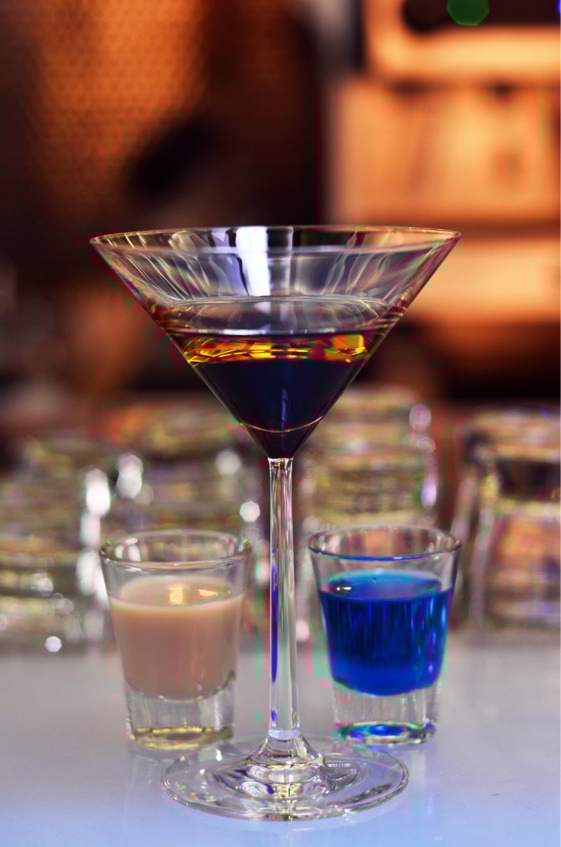
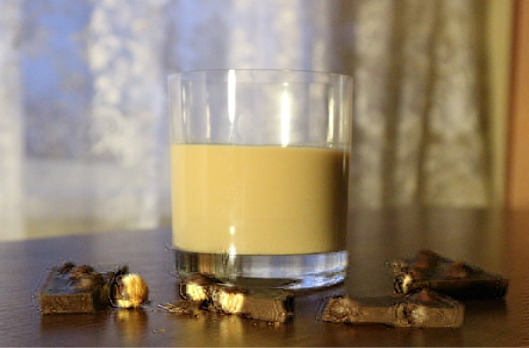
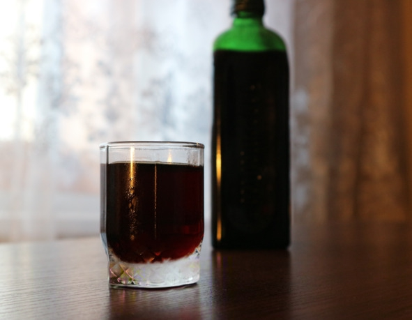
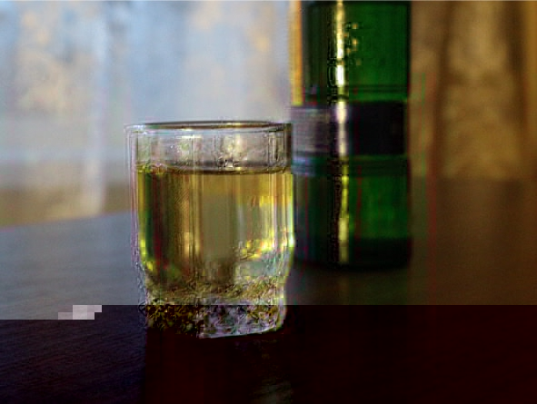
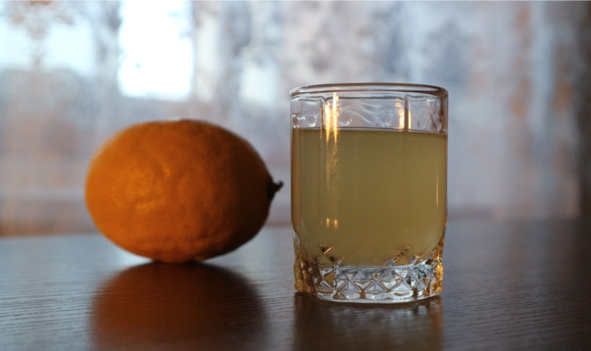

Понятие ликеров, настоек и наливок
Ликеры (от латинского liquor – жидкость) – сладкие спиртные напитки, содержащие в составе фруктовые или ягодные экстракты, настои душистых трав, пряности или другие ингредиенты (какао, орехи и т. д.). Алкогольной основой ликеров является этиловый спирт или другие крепкие напитки: виски, ром, коньяк, водка. Характерная особенность ликеров – высокое содержание сахара (более 100 г/л).
Настойки – это группа алкогольных напитков, производимых путем настаивания дистиллята или разбавленного этилового спирта на травах, корнях, специях и пряностях. Обычно настойки крепче ликеров, но не такие сладкие или вовсе не содержат сахара.
Наливки – сладкие фруктово-ягодные алкогольные напитки, полученные методом настаивания крепкого алкоголя на фруктах или ягодах либо приготовленные путем естественного брожения сырья с добавлением сахара.
Ликеры, настойки и наливки относятся к одной группе спиртных напитков. При этом на Западе все они зачастую объединены термином «ликеры» (liqueurs), а понятие «настойки» (tinctures) используется для обозначения лекарств и других экстрактов, но не алкоголя. Наливки – славянский термин, в зависимости от технологии производства эквивалентный ликерам из фруктово-ягодного сырья или сладким винам. В этом отличие наливок от настоек, которые делают из трав и другого сырья.
Технология производства и виды ликеровСогласно международным стандартам, ликером является спиртной напиток крепостью не менее 15% об., производимый одним из трех способов.
1. Настаивание, дистилляция, корректировка. Ягоды, фрукты, травы и другие компоненты некоторое время вымачивают в чистом спирте (настаивают), затем полученную жидкость дистиллируют. Для снижения крепости в готовый напиток добавляют воду и сахар. Если не использовать красители, ликер получится прозрачным.
2. Мацерация (вымачивание). Заключается в вымачивании основы ликера в спирте или крепком алкоголе (виски, коньяке, джине и т. д.) на протяжении нескольких месяцев с последующей фильтрацией и внесением других ингредиентов, предусмотренных рецептурой. В эту группу попадают почти все фруктовые ликеры. По сути это обычные настойки с сахаром.
3. Комбинированный. Является комбинацией двух предыдущих способов в том или ином виде.
Состав ликеровКаждый производитель пытается создать уникальный состав, отличающий его торговую марку от конкурентов, однако есть базовые компоненты:
– алкогольная основа – в большинстве случаев это бренди или зерновой спирт;
– экстракт – создает базовый вкус, для получения экстракта подходят любые фрукты и ягоды, благодаря этому ассортимент ликеров настолько разнообразен;
– ароматизаторы – травы, специи, корни растений или их синтетические заменители, в зависимости от рецептуры многие из этих добавок могут быть экстрактами;
– другие компоненты – отвечают за вкусовой оттенок или полностью формируют вкус, в эту группу попадают какао, яичный желток, чай, кофе, сливки, ваниль и т. д.;
– дистиллированная вода – нужна для регулировки крепости и консистенции;
– подсластители – сахар, чистая глюкоза или мед.
Виды ликеровВ зависимости от крепости и содержания сахара выделяют:
– крепкие (35—45% об. спирта, 32—50% сахара) – в чистом виде пьют небольшими глотками из маленьких рюмок, также крепкие ликеры добавляют в чай и кофе;
– десертные (25—30% об. спирта, до 50% сахара) – отличаются ярко выраженным ароматом, подаются в конце ужина как дижестив вместе со сладкими блюдами (мороженым, шоколадом, фруктами);
– ликеры-кремы (15—28% об. спирта, 50—60% сахара) – из-за высокого содержания сахара этот вид имеет специфический приторный вкус. Кремовые ликеры пьют со льдом из бокалов для виски.
Существует еще одна, интуитивно понятная классификация, в которой за основу берут ингредиент, образующий вкус. Например, апельсиновый, малиновый, яблочный, мятный кофейный ликер и т. д.
Известные ликеры и настойки Baileys («Бейлис»)Baileys (рус. «Бейлис» или «Бейлиз») – сладкий ирландский сливочный ликер крепостью 17% об., изготовляемый путем смешивания виски тройной дистилляции и свежих сливок с последующим добавлением в состав карамели, ванили, растительного масла и какао, не содержит консервантов. Некоторые разновидности также содержат мяту, кофе и шоколад.
Производство ликера началось в Дублине в 1974 году. Дэвид Денд (David Dand), топ-менеджер компании-импортера алкоголя Gilbeys of Ireland, более известный сегодня как «крестный отец Бейлис», задумал создать что-то небывалое, ультимативно шикарное, не знающее аналогов. Дэвид собрал команду таких же увлеченных специалистов-технологов, как и сам. История «Бейлиса» тесно связана с такими именами, как Дэвид Глакхам, Том Яго, Стив Вильсон, Мэтт Макферсон. Денд видел свою миссию в том, чтобы совместить воедино две гастрономических гордости Ирландии: жирные сливки и превосходный виски.
Первый «Бейлис» смешали в домашних условиях обычным кухонным миксером. Результат получился невероятно вкусным, однако это была только первая версия знаменитого напитка, поскольку не так-то легко смешать виски со сливками, чтобы ничего не скисло, не расслоилось и не превратилось в невнятную массу. Но Дэвид твердо решил не сдаваться, продолжая эксперименты. Через три года попыток он наконец придумал способ смешивания ингредиентов в однородную массу. Так появился «Бейлис». На протяжении всего цикла разработки ликера команда сохраняла чувство юмора и бодрость духа.
Как пить «Бейлис»:
1. Время подачи. «Бейлис» относится к классическим дижестивам, его уместно ставить на стол в самом конце трапезы вместе с десертными блюдами. В качестве спиртного на весь вечер «Бейлис» используется редко, так как сочетается лишь со сладкой закуской.
2. Бокалы. В чистом виде «Бейлис» пьют из ликерных рюмок объемом 25—30 мл или бокалов для виски. Если ликер подается со льдом или смешивается с другими напитками, тогда его наливают в бокалы для вина или мартини.

«Бейлис» хорошо сочетается с шоколадом
3. Температура. «Бейлис» подают при комнатной температуре (18—20° C). Для охлаждения в бокал можно положить несколько кубиков льда, но сама бутылка с ликером не охлаждается.
4. Сочетание с другими напитками. «Бейлис» добавляют в несладкий кофе, в этом случае ликер заменяет сливки и сахар, дополнительно придавая кофе легкий алкогольный оттенок. «Бейлис» нельзя разбавлять соками, минеральной водой и газировками, в противном случае под воздействием кислоты и углекислого газа сливки сразу же свернутся и ликер станет невкусным.
5. Блюда. «Бейлис» можно закусывать любыми десертами. Оптимальным вариантом считается сливочное мороженое, отлично дополняющее вкус ликера. Из фруктов можно подать бананы и клубнику со сливками. Также «Бейлис» прекрасно сочетается с тертым шоколадом, зефиром, печеньем, арахисом и сладким творогом. В последнее время стало модным закусывать ликер фруктовыми салатами, заправленными йогуртом или сливками.
Sheridan’s («Шериданс»)Благодаря запоминающейся бутылке «Шериданс» сложно перепутать с другими ликерами. Оригинальность и нестандартность решения оправдала себя. Менее чем за десять лет этот двойной ликер стал одним из самых узнаваемых в мире. Настолько быстрого признания не удалось добиться ни одной алкогольной марке за всю историю.
«Шериданс» (англ. Sheridan’s) – это сладкий ирландский ликер крепостью 15,5% об., состоящий из двух частей: сливочно-ванильной и шоколадно-кофейной. Напиток поставляется в оригинальной бутылке, разделенной на две секции, содержимое которых смешивается при наливании.
Благодаря специально разработанной обтекаемой форме бутылки и разному диаметру горлышек две части ликера всегда смешиваются в нужной пропорции 1:2 (одна белая часть и две черные части).
В состав «Шериданс» входит виски, свежие ирландские сливки, вода, натуральный ванильный ароматизатор, сахар, кофе и шоколад. Напиток не содержит консервантов. Срок годности ликера – 18 месяцев со дня разлива. Открытую бутылку можно хранить при температуре +5—25° C в течение шести месяцев.
Кроме традиционного сливочно-кофейного варианта также существует ягодный «Шериданс» (Sheridan’s Berries), отличающийся кисловатым привкусом. В этом напитке кофейная часть заменена ликером из красных лесных ягод.
Производство Sheridan’s началось в 1994 году в Дублине компанией Thomas Sheridan&Sons, входящей в алкогольный концерн Diageo – владельца еще одного популярного ирландского ликера «Бейлис» (Baileys).
Главной «фишкой» Sheridan’s стала уникальная бутылка, дизайн которой разрабатывала копания PA Consulting Group. На этапе проектирования возникла проблема с горлышком. Инженеры никак не могли придумать систему, одновременно наливающую обе части ликера в нужных пропорциях, сливочная часть заканчивалась раньше. Из-за этого «Шериданс» поступил в продажу на несколько месяцев позже, чем планировалось.
Впоследствии оригинальность бутылки высоко оценили не только потребители, но и специалисты. В первый год своего существования ликер «Шериданс» получил золотую медаль на парижской выставке Sial D’Or, посвященной инновационным решениям в сфере производства напитков и продуктов питания. Еще одной золотой медали Sheridan’s удостоился в 1995 году на выставке Monde Selection в Брюсселе за отменное качество.
Общие советы:
– оптимальная температура подачи – 22—24° C;
– посуда – прозрачные ликерные рюмки объемом 40—60 мл;
– тип напитка – дижестив (десертный);
– лучшая закуска – печенье, мороженое, сладкая выпечка и шоколад.
Способы пить «Шериданс»:
В чистом виде, наливая слоями. Инструкция:
1. Поставить рюмку под углом 45°.
2. Открыть бутылку, поднести горлышко к рюмке, резервуар с кофейно-шоколадной частью должен находиться сверху.
3. Тоненькой струйкой по стенке наполнить рюмку на 90% и выровнять.
Рюмку выпить залпом, не закусывая. Еще можно пить через трубочку, начиная с нижнего слоя. Сначала чувствуется приятный сладкий вкус, напоминающий крепкий кофе со сливками, плавно переходящий в ореховое послевкусие.
В чистом виде, взбалтывая. На дно рюмки положить кусочек льда (необязательно), налить ликер и хорошо перемешать слои. Затем выпить «Шериданс» небольшими глотками, смакуя напиток и закусывая его свежей сладкой выпечкой или мороженым.
С другими напитками. «Шериданс» прекрасно сочетается с кофе и горячим шоколадом. Достаточно добавить 5—10 мл ликера на кружку. Можно обойтись без сахара, так как ликер сам по себе очень сладкий. Некоторые гурманы предпочитают смешивать «Шериданс» с чаем, но это уже больше напоминает английский стиль, где есть традиция пить чай с молоком.
Ликер «Шериданс» нельзя разбавлять цитрусовыми соками (апельсиновым, лимонным и т. д.), так как содержащаяся в них кислота сразу же сворачивает сливки, портя вкус. Также в «Шериданс» не рекомендуют добавлять любые газированные напитки, в том числе минеральную воду.
Jagermeister («Егермейстер»)Изначально этот ликер создавался как лекарственное средство для улучшения пищеварения. Оценив вкусовые качества напитка, «пациенты» начали употреблять его просто ради удовольствия.
«Егермейстер» (от нем. Jagermeister – старший егерь) – немецкий ликер крепостью 35% об., производимый путем мацерации (настаивания) трав с последующей выдержкой готового напитка в дубовых бочках. Выпускается с 1935 года компанией Mast-Jagermeister AG в городе Вольфенбюттель (Нижняя Саксония).
С 1970 года «Егермейстер» активно экспортируют в более чем двадцать стран. Первоначально напиток популяризировали музыкальные группы, играющие тяжелый рок, среди них была даже легендарная Metallica. Немалую роль в завоевании ликером мирового рынка сыграла реклама в автогонках «Формула 1» и «ДТМ». Некоторое время надпись Jagermeister даже красовалась на спортивных автомобилях Porsche 956.
Точная рецептура держится в секрете. Известно лишь, что в состав входит 56 ингредиентов, среди которых спирт, вода, карамель, сахар, имбирь, корица, пряная гвоздика, кориандр, шафран и др. Также бытует мнение, что в ликере содержится кровь оленей, но производитель это отрицает. Легенда появилась после того, как в одной из песен группа Inkubus Sukkubus назвала «Егермейстер» «сладчайшей кровью из пант оленя», а поклонники буквально восприняли метафору музыкантов.
После сбора травы высушивают, перемалывают и смешивают в определенных пропорциях. Далее смесь заливают спиртом, настаивают и несколько раз дистиллируют. Полученный ликер год выдерживают в дубовых бочках. Далее напиток фильтруют, добавляют сахар и карамель, затем настаивают еще полгода. На заключительном этапе «Егермейстер» разливают в специальные бутылки из темного стекла, защищающие напиток от негативного воздействия солнечных лучей.
Методы пить «Егермейстер»:
1. Ледяной шот (классический). Сначала бутылку несколько часов охлаждают при температуре -18° C, потом наливают ликер в водочные рюмки, которые предварительно тоже охлаждают. Рюмку выпивают одним глотком (залпом). Холодный «Егермейстер» становится тягучим и сладковатым на вкус. Спирт не ощущается, только аромат трав. Напиток идеально подходит для аперитива.

«Егермейстер» лучше пить очень холодным
2. Теплый «Егермейстер». Пьют при комнатной температуре. На вкус немного горьковат, но аромат трав раскрывается лучше, чем в охлажденном виде. Всего 20—40 мл ликера повышают аппетит и поднимают настроение. Чаще всего этот метод практикуют в лечебных или профилактических целях, например, «Егермейстер» хорошо помогает от простуды. Целебными свойствами «Егерь» похож на «Рижский бальзам», даже в истории этих двух ликеров есть много общего.
Предостережение! Не стоит забывать, что «Егермейстер» – крепкий алкогольный напиток с многочисленными травами в составе. За один вечер желательно употреблять не более 300 мл. В противном случае может наступить сильное опьянение или проблемы с пищеварительной системой (из-за экстрактов лечебных трав). Также категорически не рекомендуется смешивать «Егермейстер» с пивом, поскольку эффект от этого сочетания непредсказуем.
Закуска. Общепринятых правил нет, можно пить «Егермейстер» с теми блюдами, к которым привыкли. Например, немцы закусывают свой любимый ликер жареными колбасками, американцы заедают ломтиком апельсина с корицей, в России же часто практикуется лимон с солью (сказывается водочная культура).
Becherovka («Бехеровка»)«Бехеровка» (ударение на первый слог) – чешский травяной ликер крепостью 38% об., производимый в регионе Карловы Вары. Изначально задумывался как средство для лечения желудочных расстройств, но со временем перешел в класс алкогольных напитков. Рецепт придумал Йозеф Бехер в 1807 году. Промышленное производство началось в 1841 году.
Известно, что в состав «Бехеровки» входит 20 трав, четыре из которых растут в Карловых Варах, остальные 16 импортируются из других стран и континентов. Перечень ингредиентов хранится в строжайшей тайне, только два человека в мире (директор и технолог завода) знают точный рецепт напитка. Некоторые специалисты предполагают, что в составе «Бехеровки» есть полынь, ромашка, гвоздика, кориандр, лимон и мед. Иногда «Бехеровку» сравнивают с немецким ликером «Егермейстер», но это в корне неверно, так как напитки отличаются не только ингредиентами, но и вкусом.
Существуют следующие виды ликера:
– Original (38% об.) – рецептура не меняется с 1807 года, считается классической «Бехеровкой»;
– Cordial (35% об.) – в традиционный ликер отдельно добавляют липовый цвет и белое вино;
– Lemond (20% об.) – ликер с ароматом цитрусовых фруктов, отличительная черта – невысокая крепость;
– KV 14 (39% об.) – настойка красного цвета.
На экспорт поставляются только два вида «Бехеровки»: Original и Lemond, остальные три можно приобрести непосредственно в Чехии, причем лишь на самом заводе.
Как пить «Бехеровку»:
1. В чистом виде (рекомендовано производителем). Напиток подают в рюмках охлажденным до 5—7° C. Чехи пьют «Бехеровку» после еды или поздним вечером, это классический дижестив. Закусывать «Бехеровку» можно посыпанным корицей ломтиком апельсина. Другие блюда не предусмотрены. Сразу после глотка чувствуется сладковатый вкус с горькими нотками трав и остается длительное послевкусие. Если пробовать «Бехеровку» при комнатной температуре, появляется слишком душистый травяной аромат, напиток становится резким и не таким приятным.

«Бехеровка» – отличный дижестив
2. «Бехеровка» с пивом. Рюмку хорошо охлажденного ликера выпивают залпом, сразу же запивая светлым пивом. Этот способ популярен в Словакии. Получается оригинальный вкус, не похожий ни на что другое. Правда, сочетание крепкого алкоголя с пивом приводит к быстрому опьянению.
3. В лечебных целях. В чашку с кофе или чаем добавляют 1—2 столовые ложки «Бехеровки Ориджинал». Такое сочетание улучшает пищеварение, поднимает тонус и стимулирует иммунитет.
4. С соками. Особенно хороши в этом плане вишневый, яблочный и смородинный фреши. Пропорции разбавления по вкусу.
Malibu («Малибу»)«Малибу» – прозрачный или матово-белый ликер крепостью 21% об., изготовляемый на острове Барбадос путем смешивания белого рома, чистой родниковой воды, экстракта кокосовой пальмы (натурального или искусственного) и сахара. Напиток появился в 1980 году как полуфабрикат для коктейля «Пина Колада». На данный момент торговая марка принадлежит французской компании Pernod Ricard. Завод находится на Барбадосе, но разлив в бутылки происходит в Шотландии. При добавлении натурального кокосового экстракта «Малибу» имеет белый цвет, если используется синтетический ароматизатор, ликер получается прозрачным.
Кроме традиционных ингредиентов (рома и кокоса) в состав «Малибу» могут входить экстракты манго, маракуйи, ананаса и банана. Эти виды отличаются цветом горлышка бутылки. Ананасовый «Малибу» окрашивают в оранжевый цвет, горловина мангового варианта красная, бананового – желтая, а «Малибу» с экстрактом маракуйи имеет сиреневое горлышко. Классический кокосовый ликер поставляют в белой бутылке.
Как пить «Малибу»:
1. В чистом виде. Ликер охлаждают до 8—10° C и подают в качестве десертного спиртного перед кофе. «Малибу» пьют из ликерных рюмочек небольшими глотками, стараясь уловить кокосовое послевкусие. Напиток можно закусывать десертными блюдами, фруктами (апельсинами, виноградом) и мороженым.
2. С другими напитками. Для уменьшения крепости «Малибу» разбавляют соками, колой, негазированной минеральной водой, тоником или кофе. Этот ромовый ликер прекрасно сочетается с ананасовым, апельсиновым и яблочным соком. Оптимальная пропорция – 1:2 (одна часть ликера к двум частям сока).
Zubrowka («Зубровка»)«Зубровка» (польск. Zubrowka) – горькая настойка желтого или янтарного цвета с душистым ароматом крепостью 38—45% об., основой которой является трава зубровка. Напиток появился в XVI веке в Речи Посполитой и к XVIII веку завоевал статус любимого спиртного польской шляхты.
Зубровка душистая (Hierochloe odorata) – многолетняя трава с приятным стойким запахом, в дикой природе растет в Беловежской пуще, является пищей для зубров, отсюда и название. В англоязычных странах зубровку еще называют sweetgrass, что в переводе значит «сладкая трава». Это растение используют не только в ликеро-водочной промышленности, но и в кулинарии как приправу и пищевую эссенцию.
Трава зубровка содержит гликозид кумарина – вещество, признанное в США опасным для здоровья. Но вред наступает только при длительном и систематическом попадании в организм. При этом именно кумарин формирует у настойки аромат свежескошенного сена, повышает аппетит и улучшает пищеварение.
«Зубровку» пьют как аперитив по водочному этикету – из рюмок залпом комнатной температуры или охлажденной, в качестве закуски подходят любые несладкие блюда. В Польше настойку смешивают с яблочным соком.
Zubrowka Zlota («Зубровка злота», «Золотая зубровка»)
Польская корпорация CEDC вывела на рынок новый продукт – Zubrowka Zlota. Этот напиток не имеет ничего общего с традиционной горькой настойкой, поскольку в его составе трава зубровка отсутствует. Вкус «Золотой зубровки» формируется путем настаивания зернового спирта на дубовой коре, корне калгана, лимонной цедре, черносливе, ванили, тмине и корице.
Limoncello («Лимончелло»)«Лимончелло» – лимонный ликер крепостью 30—45% об., получаемый методом настаивания кожуры плодов на спирте в течение 3—5 дней. Традиционным производителем напитка является Италия (регионы Капри, Амальфи, Искья, Сицилия и Сардиния). В состав лимончелло входит лимонная цедра, спирт, вода и сахар. Другие ингредиенты технологией производства не предусмотрены. Самые популярные марки: Caravella Limoncello, Luxardo, Limoncello di Capri и Villa Massa.
Как пить «Лимончелло»:
1. Температура. «Лимончелло» пьют только очень холодным, почти замороженным. Перед подачей бутылку на несколько часов помещают в холодильник. Важно не перестараться и постоянно следить, чтобы напиток не превратился в лед, иначе он испортится. В Италии принято охлаждать даже сами рюмки, держа их в морозильной камере до тех пор, пока на стекле не появится тонкий слой льда.
2. Темп. Правильно пить «Лимончелло» небольшими глотками, на несколько секунд задерживая жидкость во рту, а после глотка выдохнуть пары ликера через нос. В этот момент чувствуется лимонное послевкусие и приятное тепло медленно распространяется по всему телу.
3. Время подачи. «Лимончелло» является классическим дижестивом – напитком, подаваемым после еды как десертное спиртное. Эта особенность вызвана высоким содержанием сахара (около 30%). Если выпить ликер в начале застолья, аппетит сразу же пропадет.
4. Сочетание с блюдами. «Лимончелло» закусывают сладкими десертными блюдами (выпечкой, конфетами, шоколадом) и фруктами. В Италии зачастую обходятся без закуски, ограничиваясь кусочком лимона. Однако это уже на любителя, поскольку крепость достаточно высокая.
5. «Лимончелло» с мороженым. Простое, но очень оригинальное и вкусное блюдо. Достаточно положить сливочное мороженое в блюдце, затем сверху полить лимонным ликером.

«Лимончелло» подают холодным
Amaretto («Амаретто»)«Амаретто» – темно-коричневый итальянский ликер с горьковатым вкусом и запахом миндаля крепостью 21—30% об. В состав «Амаретто» входит виноградный спирт, миндальные орехи (или абрикосовые зернышки), ваниль, травы и специи. Традиционный регион производства – город Саронно в провинции Ломбардия.
Название Amaretto произошло от итальянского слова amaro, которое переводится как «слегка горьковатый». Это самая точная характеристика напитка, обозначающая его суть. Согласно самой распространенной версии, история «Амаретто» связана с художником эпохи Возрождения Бернардино Луини (1485—1532), который был учеником Леонардо да Винчи. Однажды Луини приехал в Саронно, чтобы написать фреску для местного монастыря. Для образа Мадонны художник выбрал красивую вдову. В процессе работы над картиной Луини и натурщица полюбили друг друга. Когда пришла пора расставания, женщина подарила любимому напиток, состоящий из виноградного бренди, абрикосовых косточек и специй. Для поддержания этой красивой легенды долгое время на этикетке «Амаретто» была изображена таинственная улыбающаяся незнакомка. Правда, неизвестно, как в таком случае рецепт ликера попал к итальянскому семейству Дисаронно, которое претендует на его авторство.
Как пить «Амаретто»:
1. В чистом виде. Ликером комнатной температуры наполняют рюмочки объемом 60—100 мл. Пьют «Амаретто» неспешно, маленькими глотками, наслаждаясь каждой каплей. Закусывать можно сыром, фруктами, мороженым и десертами.
Еще в бокал с «Амаретто» принято добавлять лед. Этот способ не так популярен, поскольку тающий лед искажает вкус, а низкая температура не дает насладиться запахом напитка. Подавать «Амаретто» со льдом лучше в качестве дижестива.
2. Смешивая с другими напитками. В первую очередь это апельсиновый и вишневый соки. Разбавленный соком в пропорции 1:1 «Амаретто» считается прекрасным освежающим напитком невысокой крепости. В ночных клубах «Амаретто» часто смешивают с «Кока-колой». Пропорция 1:2 (одна часть ликера и две части колы), по вкусу полученная смесь напоминает вишневую колу. Несколько чайных ложек ликера можно добавить в чай, кофе или горячий шоколад. Получится чашка согревающего напитка с оригинальным миндальным привкусом.
Triple Sec («Трипл Сек»)«Трипл Сек» – бесцветный цитрусовый ликер крепостью 15—40% об., изготовленный из цедры сладких апельсинов и горьких померанцев с добавлением пряных трав. Название переводится с французского как «тройной сухой», потому что в производстве используются только высушенные плоды, а сам напиток три раза подвергают дистилляции в медных перегонных кубах. Классический «Трипл Сек» всегда прозрачный.
Технология зависит от конкретного производителя, особенности процесса обычно держат в секрете, чтобы снизить риск конкуренции. Однако любые напитки вида «Трипл Сек» настаивают на цитрусовой цедре, подвергают тройной перегонке, затем разбавляют и подслащают. Обычно за основу берут чистый спирт, иногда бренди или коньяк.
Изобретателем напитка считается французский винодел во втором поколении Жан-Батист Комбье. По легенде в возрасте 19 лет мсье Комбье и его брат Клод переехали в городок Сомюр, привлеченные благоприятным местным климатом и плодородной почвой. Через шесть лет у братьев уже была собственная кондитерская, но Жан-Батист не остановился на сладостях, в свободное время он экспериментировал со спиртами и дистиллятами. Считается, что Комбье взял за основу рецепт Франсуа Распайла, с которым познакомился в тюрьме. По другой версии, Франсуа опубликовал описание апельсинового ликера в журнале, а Жан-Батист в 1834 году «улучшил» состав, заменив спирт на коньяк и добавив к цедре сладкого апельсина ароматные травы. Однако обе эти версии расходятся с исторической правдой: «Трипл Сек» изготавливается с 1830-х, а встреча с Франсуа Распайлом случилась только в 1853 году. Самое достоверное предположение – Комбье придумал рецепт «Трипл Сека» сам после многочисленных экспериментов и подбора пропорций.
В 1848 году Жан-Батист полностью оставил кондитерский бизнес и сконцентрировался на производстве «Трипл Сека». Помещение, в котором винодел занимался перегонкой, спроектировал знаменитый Александр Густав Эйфель. Мсье Комбье состоял в оппозиции к Наполеону III, за что и поплатился свободой: бывшего кондитера обвинили в предательстве монархии и на семь лет заключили в тюрьму, где он попал в одну камеру с Франсуа Распайлом. Быстро выяснилось, что сокамерники имеют много общего: оба были виноделами и изобретателями новых вкусов.
Руководствуясь советами своего товарища по несчастью, Комбье изобрел другой напиток, дополнив «Трипл Сек» алоэ, мускатным орехом, миррой, кардамоном, корицей и шафраном. Новый ликер получил «скромное» название Royal Combier Grande и выпускается до сих пор. После смерти Жана-Батиста семейное дело перешло в руки его сына, Джеймса, ставшего впоследствии мэром Сомюра.
Ликер можно употреблять в чистом виде со льдом после еды в качестве дижестива, поскольку травяные эссенции в составе способствуют улучшению пищеварения. Однако чаще всего «Трипл Сек» используют в коктейлях – оригинальный апельсиновый вкус придает пикантности. Также «Трипл Сек» можно добавлять в кофе или мороженое, разбавлять цитрусовым соком, апельсиновой газировкой, подмешивать в выпечку для аромата.
Cointreau («Куантро»)«Куантро» – прозрачный ликер из цедры сладких и горьких апельсинов крепостью 40% об., изготавливаемый во французской провинции Сен-Бартелеми Д’Анжу. Напиток имеет характерный цитрусовый вкус, цветочно-фруктовый аромат, может подаваться как аперитив, так и дижестив (десертный алкоголь). Еще «Куантро» входит в состав многих популярных коктейлей, например B-52 и «Маргарита».
Ликер «Куантро» изобретен в 1875 году братьями-кондитерами Адольфом и Эдуард-Жаном Куантро. Сначала молодые люди наладили выпуск ликера Guignolet («Гиньоле») из сладких и кислых сортов вишни, который до сих пор популярен во Франции. Однако успех «Куантро» затмил все предыдущие эксперименты: уже к началу Первой мировой войны в мире ежегодно продавалось более 800 тыс. бутылок ликера на основе апельсинной цедры и дистиллята сахарной свеклы. Сегодня эта цифра составляет не менее 13 млн. В 1989 году семейное предприятие Cointreau & Cie SA слилось с концерном Remi Martin. Теперь все права на бренд принадлежат получившейся в результате слияния компании Remi Cointreau.
Рецепт напитка, пропорции и точная технология производства держатся в секрете, но любой желающий может отправиться на экскурсию по расположенному на предприятии музею и посмотреть, в каких условиях изготавливают «Куантро». Известно, что горькие померанцы заказывают на Антильских островах, а сладкие апельсины прибывают на завод из Франции и Испании. Точные соотношения «сладости» и «горечи» неизвестны. Считается, что сначала цедру настаивают на свекольном спирте, затем вытяжку (настойку) дважды перегоняют в медных кубах, отсекая «головы» и «хвосты». Необходимую сладость и крепость «подгоняют» сахаром и родниковой водой. Возможно, что в рецепт также входят травы.
Насыщенный вкус ликера обусловлен не только богатым разнообразием используемых сортов померанцев: апельсины собирают и обрабатывают таким способом, чтобы сохранить в плодах максимальное количество эфирных масел, которые придают ликеру особый вкус и аромат свежих фруктов.
Благодаря высокой крепости «Куантро» разжигает аппетит и улучшает пищеварение, поэтому его нередко подают в начале застолья охлажденным до 4—6° C. При более высокой температуре сервировки появляется слишком сильный цитрусовый аромат. Разливать напиток лучше в обычные ликерные рюмки и пить маленькими глотками. Желающие снизить крепость разбавляют «Куантро» холодным апельсиновым или грейпфрутовым соком в любых пропорциях.
Можно бросить в бокал пару кубиков льда, тогда жидкость должна помутнеть: это верный признак, что в руках подлинный бренд, отличающийся высоким содержанием эфирных масел, а не подделка. Также «Куантро» пьют после сытного обеда, закусывая долькой лайма или лимона, чтобы подчеркнуть и оттенить цитрусовый букет.
Blue Curacao («Блю Кюрасао»)«Блю Кюрасао» – одна из самых известных вариаций апельсинового ликера «Трипл Сек» (Triple Sec). Голубой напиток изготавливают из сушеной цедры специального сорта горького померанца – лараха, растущего только на Карибах. Крепость – 30% об.
Лараха – не автохтонный карибский фрукт, его предком был валенсийский апельсин, завезенный на остров испанцами в 1527 году. Цитрус не смог до конца прижиться на сухой неплодородной почве и выродился в маленькие горькие плоды. Есть лараху невозможно, но ароматная цедра используется в кулинарии.
Существует две противоречащие версии происхождения «Блю Кюрасао». Голландская фирма – производитель ликеров Lucas Bols утверждает, что честь изобретения принадлежит ее основателю Лукасу Болсу. Предприниматель объяснял синий цвет «тайным алхимическим элементом», утверждал, что не использует красителей, и назвал ликер Creme de Ciel («Небесные сливки»). С другой стороны, фирма Senior Company, расположенная на Кюрасао, заявляет, что это их первый директор, Эдгар Сеньор, разработал рецепт ликера в 1896 году. По сей день Senior Company – единственный производитель, использующий в рецептуре фрукт лараха, выращенный на Кюрасао, поэтому на продукции этой компании стоит пометка genuine («настоящий»). Неизвестно, кому первому пришла идея подкрашивать бесцветный ликер, однако упоминания о «синем» или «оранжевом» «Кюрасао» встречаются уже в 1920-х годах. Скорее всего, это было сделано для того, чтобы напиток живописнее смотрелся в коктейлях.
Цедру ларахи помещают в джутовые мешки, добавляют специи (гвоздику, корицу, мускатный орех), заливают подогретым винным спиртом и выдерживают три дня. Затем получившийся настой дистиллируют, добавляют сахар, разбавляют водой и подвергают фильтрации. Так получается алкоголь с ярко выраженным апельсиновым привкусом и легкой горчинкой. Сам по себе напиток бесцветный, нужный цвет дают специальные красители.
Некоторые производители используют красители на основе антоцианов – натуральных пигментных веществ, содержащихся во многих цветах и ягодах, например бузине. Другие применяют более дешевые химические аналоги: Е131, Е132, Е133. Информация о составе и красителях указана на этикетке.
Интересный факт: плантация ларахи на острове Кюрасао состоит всего из 45 деревьев, которые дают не более 35 кг цедры в год. Фрукты собирают вручную, еще недозрелыми, а шкурку срезают только деревянным ножом, чтобы не повлиять на вкус цитруса.
Ликер можно пить в чистом виде со льдом или предварительно охладив бутылку в холодильнике. К напитку подают фрукты или десерты. Также любую из вариаций можно добавить в кофе или чай, разбавить соком или лимонадом. Чаще всего голубой ликер используют в коктейлях.
Campari («Кампари»)«Кампари» – итальянский ликер крепостью 25% об., изготавливаемый на основе более чем 20 трав, корней, фруктов, специй. Точная рецептура и состав держатся в секрете производителем, известно лишь, что горчинка появляется благодаря средиземноморским горьким апельсинам сорта «Померанец миртнолистый». До 2006 года красный цвет «Кампари» обеспечивался натуральным пищевым красителем кармином, получаемым из самок насекомых кошенили. На данный момент используется синтетический заменитель. Считается, что в состав «Кампари» входит туйон – наркотическое вещество, обладающее галлюциногенным эффектом. Однако ни одной из многочисленных проверок не удалось доказать факт его наличия.
Ликер назван в честь миланского владельца кондитерского магазина Гаспаре Кампари, который в свободное время занимался созданием спиртных напитков. В 1860 году Гаспаре удалось придумать выдающийся рецепт. Понимая это, предприимчивый итальянец сразу же основал фирму Gruppo Campari. Промышленное производство началось в 1904 году.
«Кампари» можно пить двумя способами:
1. В чистом виде. Ликер следует подавать перед едой как аперитив, предварительно охладив до 8—10° C или добавив лед. Всего 20—30 мл напитка способствуют улучшению аппетита. Пьют «Кампари» небольшими глотками из стопок или стаканов. Закусывают апельсинами и другими фруктами. Этот способ раскрывает полноту гаммы вкуса, но ликер должен быть обязательно холодным, так как при комнатной температуре появляется неприятный привкус трав.
2. С другими напитками. В первую очередь с соками. Разбавление «Кампари» свежим апельсиновым, грейпфрутовым, лимонным или вишневым соком в пропорции 1:2 (одна часть ликера и две части сока) на порядок снижает крепость и уменьшает горечь. В летнюю пору микс из «Кампари» с соком и льдом прекрасно утоляет жажду.
Grand Marnier («Гран Марнье»)Французский ликер Grand Marnier – напиток, созданный в 1880 году Александром Марнье-Лапостолем на основе бренди, эссенции горьких померанцев и сахара. Крепость – 40% об., ликер пьют в чистом виде в качестве дижестива с десертами или в составе коктейлей.
Точный рецепт хранится в секрете, но некоторые факты общеизвестны. Для производства ликера «Гран Марнье» компания использует только настоящий французский коньяк. Купажисты сами смешивают виноградные спирты, чтобы получить бленд, оптимально сочетающийся с цитрусовым букетом.
Горькие карибские померанцы собирают вручную, причем тщательно следят, чтобы плоды еще не достигли пика зрелости, иначе они потеряют аромат и львиную долю вкуса. Мякоть удаляют, а со шкурки снимают цедру, которую оставляют сохнуть на солнце. Высушенную цедру померанцев замачивают в спирте, потом готовую настойку перегоняют, чтобы получить концентрированную эссенцию.
Коньяк, померанцевый дистиллят и другие ингредиенты (точный состав неизвестен) смешивают и отправляют в дубовые бочки на выдержку. Наконец, готовый напиток разливают по фирменным бутылкам с характерной красной лентой на горлышке и восковой печатью. Ликер экспортируют в 150 стран.
Первая порция знаменитого ликера увидела свет в 1880 году, но его история началась немного раньше. В 1827 году Жан-Батист Лапостол основал винокурню. В 1876 году его внучка вышла замуж за Луи-Александра Марнье, выходца из семьи виноделов, дав начало новой династии. Четыре года спустя и был изобретен ликер «Гран Марнье», причем изначально он назывался «Кюрасао Марнье», в честь острова, на котором растут необходимые для производства плоды. Легенда утверждает, будто бы друг Луи-Александра, владелец сети отелей «Цезарь Ритц», попробовал ликер и воскликнул: «Да это же просто великолепный (фр. grand) Марнье!», став «крестным отцом» бренда.
К началу XX века напиток уже удостоился множества национальных и международных наград, например, на выставке в Чикаго в 1893 году или Парижском конкурсе в 1900 году. Луи-Александр умело продвигал бренд, предлагая ликер богатым и влиятельным покупателям. После одной из таких дегустаций австрийский император Франц Иосиф приобрел у производителя сразу 12 ящиков «Гран Марнье». Кроме того, винодел водил близкую дружбу с отельером Ритцем, благодаря чему новый ликер подавали постояльцам в конце каждой трапезы. В 1927 году появилось юбилейное «издание» Cuvee du Centenaire, а в 1933 Европу и США охватил «коктейльный бум», и ликер из горьких померанцев стал обязательным атрибутом любого уважающего себя бара. В 1975 году предприятие обзавелось собственной линией бутилирования в Нормандии, а два года спустя появился очередной праздничный сорт – Cuvee du Cent Cinquantenaire. Бренду уже почти 200 лет, и все это время он принадлежит одной семье, в которой сменилось уже шесть поколений.
Ликер можно пить в чистом виде или со льдом из коньячных или бокалов для виски. Закуска не требуется, так как «Гран Марнье» выступает в роли дижестива. Также «Гран Марнье» является практически незаменимым компонентом коктейлей на основе коньяков. Кроме того, ликер часто добавляют в кофе, выпечку, основные блюда, соусы и десерты.
Vana Tallinn («Вана Таллин»)Vana Tallinn (в переводе на русский «Старый Таллин») – эстонский темно-коричневый ликер из ямайского рома, терпких трав, цитрусовых масел и сахара крепостью 35—50% об. Изобретен в 1962 году Яаном Сиимо и Бернардом Юрмо. Популярен в Прибалтике и европейской части России.
Ликер пьют в чистом виде со льдом, а также добавляют в чай или кофе. «Старый Таллин» подают как аперитив или дижестив, но это больше десертный напиток, который хорошо закусывать фруктами, сладкой выпечкой или конфетами.
Mozart («Моцарт»)Шоколадный ликер «Моцарт» выпускают на родине великого композитора в Австрии. Линейка бренда насчитывает шесть наименований крепостью от 15% до 40% об. Производитель утверждает, что за каждой бутылкой стоят 150 лет опыта и вдохновения, благодаря этому удается создавать новые вкусы и поддерживать отменное качество. Бренд является лидером на мировом рынке шоколадных ликеров, поставляя продукцию в 70 стран.
Компания Mozart Distillerie GmbH появилась в 1954 году в родном городе Вольфганга Амадея Моцарта Зальцбурге. Изначально предприятие называлась H.C. Konig в честь основателя Харальда Кенига. Затем руководство фирмы решило построить бренд вокруг имени Амадея Моцарта и не прогадало. Во время изготовления ликеров непрерывно играет музыка гениального композитора, а какао перемешивают с помощью ультразвука, благодаря чему ликер приобретает идеальную консистенцию. В 2008 году 50% акций компании были выкуплены Suntory Limited, дочерним предприятием концерна Suntory Group. Эта сделка позволила «Моцарту» выйти за пределы европейского рынка и завоевать признание на Востоке. Шоколадные ликеры – приоритетное, но не единственное направление деятельности компании. Также Mozart выпускает элитный шоколад.
Все ликеры «Моцарт» объединяет одна черта: они производятся из натуральных ингредиентов, таких как шоколад, тростниковый сахар, бурбонская ваниль и спирт. Красители, ароматизаторы и отдушки не используются. Точный рецепт содержится в секрете, однако известно, что основой для всех ликеров служит какао-дистиллят той или иной степени выдержки. Производитель считает, что успех продукта обусловлен удачным подбором пропорций ингредиентов и уникальной технологией дробления компонентов звуком и ультразвуком.
Сначала отборные зерна какао сортов «Форастеро» и «Тринитарио» подвергают холодной мацерации (замачиванию) в спирте из тростникового сахара. Настаивание длится не менее двух месяцев. Затем часть настоя перегоняют, а полученный дистиллят соединяют с оставшимся настоем методом конширования – интенсивного смешивания при высоких температурах под воздействием звука (в том числе музыкальных произведений Моцарта) и ультразвука. Компания называет эту технологию sound-milling (звуковое измельчение). Благодаря коншированию твердые частицы какао разбиваются и лучше смешиваются с другими составляющими, в результате получается алкогольный напиток идеальной консистенции. Наконец, ликер «Моцарт» разливают по характерным пузатым бутылочкам, заворачивают в нарядную светонепроницаемую упаковочную бумагу, защищающую от негативного воздействия солнечных лучей.
White Chocolate Cream Strawberry («Клубника с белым шоколадом») – подают охлажденным или со льдом в чистом виде. Также богатый фруктовый букет делает ликер незаменимым ингредиентом коктейлей. В состав входит рафинированный сахар, свежая клубника, бурбонская ваниль, сливки, масло какао. Крепость – 15% об.
Gold Chocolate Cream («Молочный шоколад») – в составе бельгийский шоколад, свежие сливки и ароматные нотки ванили и какао. Подается слегка охлажденным в качестве дижестива или добавляется в десерты, например ванильное мороженое. Прекрасно сочетается с кофе. Крепость – 17% об.
White Chocolate Vanilla Cream («Белый шоколад с ванилью») – среди ингредиентов ваниль, карамель, свежие сливки, белый шоколад. В букете ясно прослеживаются фруктовые нотки. Обладает мягким бархатистым вкусом, содержание жира на 60% меньше, чем в ликерах Irish Cream (самый известный представитель – «Бейлис»). Подают охлажденным, лучше всего – с сезонными фруктами. Крепость – 15% об.
Dark Chocolate («Горький шоколад») – во вкусе преобладает горький шоколад, ваниль и карамель, в букете чувствуются «дымные» нотки и легкая горчинка. Какао-дистиллят для этого ликера проходит двухлетнюю выдержку в дубовых бочках. Напиток пьют как в чистом виде, так и с кофе или в составе коктейлей. Крепость – 17% об.
R.G. Premium Chocolate Cream («Превосходный молочный шоколад») – изготавливается из элитного бельгийского шоколада, какао, мадагаскарской ванили, свежих сливок, масла какао и спирта. Какао-дистиллят вызревает в дубовых бочках не менее шести месяцев. Крепость – 17% об.
Chocolate Vodka («Шоколадная водка») – неразбавленный дистиллят шоколадной настойки без сахара. Производится на отдельном заводе. Крепость 40% об.
Benedictine («Бенедиктин»)«Бенедиктин» – французский травяной ликер крепостью 40% об., изобретенный Александром Леграном в 1863 году. На этикетке каждой бутылки печатают буквы D.O.M., что означает Deo Optimo Maximo, в переводе с латыни – «Господу, всеблагому, величайшему». Именно эту аббревиатуру можно встретить в начале любого документа ордена бенедиктинцев – так монахи посвящают свою работу Богу. Горлышко бутылки огибает надпись «Настоящий Бенедиктин» с изображением католического креста.
Легенда гласит, что рецепт разработали в Средние века монахи бенедиктинского монастыря в Нормандии – святые братья стремились создать лекарство на основе душистых трав. На самом деле истинный изобретатель, Александр-Проспер-Хуберт Легран, придумал этот напиток во второй половине XIX века в соавторстве с местным химиком, а красивую историю про древние монашеские традиции написал только для того, чтобы повысить продажи. Именно Александр назвал напиток «Бенедиктином», начал использовать бутылки характерной легко узнаваемой формы и выстроил фабрику-«дворец» по производству «Бенедиктина» в неоготическом стиле.
По легенде изобретателем ликера считается венецианский монах Бернардо Винчелли, алхимик и травник, который якобы дистиллировал некоторые лекарственные растения. Ликер получился так хорош, что его по достоинству оценили даже при королевском дворе. С течением времени рецепт был утерян, пока в 1863 году его не нашел виноторговец Легран.
Оригинальный рецепт ликера «Бенедиктин» известен только трем людям. Воспроизвести напиток пока никому не удалось: производитель даже открыл выставку «зал подделок», в которой коллекционирует неудачные попытки копировать знаменитый ликер. Уже в 1873 году производство нового бренда достигло 150 тыс. бутылок в год. На 2010 год 75% всей продукции шло на экспорт, преимущественно в США, Малайзию и Сингапур.
Более-менее доподлинно известно, что в состав напитка входят 27 трав и специй: корица, мед, апельсиновая цедра, ваниль, гвоздика, лимон и т. д. Ингредиенты разбивают на группы, каждую из которых настаивают отдельно. Полученные настойки дистиллируют в медных кубах один или два раза, затем купажируют дистилляты в определенных пропорциях, а полученный напиток выдерживают два года в дубовых бочках и разливают в бутылки.
«Бенедиктин» можно пить в чистом виде как аперитив или дижестив, добавив в бокал пару кубиков льда, закуска не предусмотрена. Однако чаще всего этот ликер используется в качестве кулинарного или коктейльного ингредиента. Также напиток хорошо сочетается с кофе и десертами, а подают его в маленьких рюмках.
Frangelico («Франжелико»)«Франжелико» – итальянский ликер на основе лесного ореха и трав. Чтобы придать напитку красивый золотистый оттенок, его подкрашивают карамелью. Крепость ликера составляет 20% об. Бренд известен своей оригинальной упаковкой: бутылка выполнена в форме монаха, подпоясанного белой веревкой. На рынке встречаются два варианта объема: 750 мл и 375 мл. Ликеру присущ интенсивный ореховый аромат и богатый букет с явными, но деликатными тонами лесного ореха, нюансами ванили, темного шоколада.
Согласно легенде, название происходит от имени отшельника брата («фра») Анжелико, который жил в Пьемонте 300 лет назад и якобы создал уникальную рецептуру напитка. Несмотря на то что благочестивый старец принадлежал к ордену доминиканцев, бутылка выполнена в форме монаха-францисканца. Ликер «Франжелико» был создан в 1978 году семьей итальянских виноделов Барберо.
Способ изготовления «Франжелико» похож на методы производства большинства ореховых ликеров: очищенный, поджаренный и дробленый фундук заливают разбавленным спиртом и настаивают. Затем эту настойку дистиллируют и смешивают с экстрактами какао, ванили, кофе, других трав (разумеется, точный рецепт и пропорции держатся в секрете). Готовую смесь доводят до нужной крепости, фильтруют, подслащивают. Еще 6—8 недель ликер выдерживают в чанах: это время необходимо, чтобы все использованные спирты «поженились» и смешались в один гармоничный напиток. Наконец, «Франжелико» бутилируют, маркируют, «подпоясывают» веревочкой и отправляют на прилавки.
Сами производители так описывают напиток: «темный снаружи и светлый внутри, сладкий, но восхитительно освежающий». Они утверждают, что богатый вкус «Франжелико» обусловлен происхождением ингредиентов: для производства напитка используются отборные орехи из итальянского региона Пьемонт. Этот фундук такой особенный, что даже обладает собственным названием: Tonda Gentile. Сорт растет исключительно на севере Италии, это крупные «мясистые» орехи с тонкой шкуркой, их можно поджаривать, не рискуя получить горьковато-горелый привкус.
Ликер «Франжелико» можно пить в чистом виде, со льдом, разбавлять содовой или добавлять в кофе.
Amarula («Амарула»)Ликер «Амарула» имеет крепость 17% об., содержит 20% сахара и запоминается мягким карамельно-молочным вкусом. Напиток изготавливают с 1989 года из плодов «слоновьего дерева» (другие названия – «свадебное дерево», марула, склерокария эфиопская) и свежих сливок. Производством занимается одна компания в мире – Southern Liqueur Co. Бренд получил признание и является вторым по популярности сливочным ликером в мире после ирландского «Бейлиса».
Дерево марула растет только в Южной Африке и плодоносит раз в году – в середине лета. Плоды – насыщенно-желтые овальные фрукты с мясистой белой мякотью. В одной маруле содержится в четыре раза больше витамина С, чем в среднем апельсине, а во вкусе фрукта чувствуются ореховые, цитрусовые и сливочные нотки. Особенность дерева заключается в том, что его нельзя культивировать и селекционировать – марула сама выбирает, где расти. Если «слоновьему дереву» не понравится почва, оно приживется, но плодоносить не будет. Когда на маруле появляются плоды, воздух наполняется сладковатым ароматом, привлекающим слонов, – это верный знак, что пора приступать к сбору урожая.
Созревшие, налитые соком и напитавшиеся солнечным светом плоды марулы собирают вручную, очищают от шкурки и косточек, перемалывают в однородную массу и отправляют на брожение. Затем получившееся вино подвергают двойной дистилляции и оставляют на два года в дубовых бочках. В результате выдержки дистиллят приобретает тона ванили и поджаренных тостов. Наконец, на последнем этапе в ликер добавляют сливки и разливают готовую «Амарулу» по бутылкам.
Виды:
– Amarula Cream – сливочный ликер;
– Amarula Gold – дистиллят без добавления сливок.
Сами производители рекомендуют пить сливочный ликер, добавив кубики льда и любуясь африканскими пейзажами. Закусывать напиток можно фруктами, десертами и мороженым. «Амарулу Голд» обычно пьют с имбирным пивом или содовой, разбавляя в пропорции 1:8 (25 мл «Амарулы» на 200 мл напитка). Также это крепкое спиртное можно смешивать с любым лимонадом или соком.
Kahlua («Калуа»)«Калуа» – мексиканский кофейный ликер крепостью 20—35% об. на основе рома с добавлением кукурузного сиропа и ванили, а также других ингредиентов. Считается десертным спиртным и входит в состав многих коктейлей.
Ликер «Калуа» появился в 1936 году, когда четверо молодых мексиканцев решили открыть свое дело. Один из них стал идейным вдохновителем и создал рецепт, двое других предоставили первоклассный кофе, а четвертый сумел перевести проект на коммерческие рельсы и наладить производство нового напитка. По одной из версий, создатель ликера Педро Домек назвал свое изобретение «Дом людей Акольуа» в честь исчезнувшей народности долины Мехико, что на языке ацтеков звучит Kahlua. Однако на официальном сайте компании сказано, что термин взят из древнеарабского языка и означает «кофе».
Требуется семь лет, чтобы изготовить партию «Калуа», при этом шесть лет занимает выращивание правильного кофе. Для ликера годятся только особенные зерна, которые созревают в тени, а не на солнце, поэтому процесс идет гораздо медленнее, чем при обычных условиях. Собранные зерна дополнительно выдерживают полгода в холщовых мешках, в это время производитель занимается созданием алкогольной основы напитка – рома. Затем ром настаивают на кофейных зернах четыре недели, фильтруют, в зависимости от рецептуры добавляют другие ингредиенты и разливают готовый напиток по бутылкам.
Мексиканский кофейный ликер отлично сочетается с молоком, сливками, кофе и кокосовым молоком. В зависимости от личных предпочтений его пьют в чистом виде со льдом, добавляют в кофе или чай, поливают мороженое, брауни (шоколадное пирожное), сладкие пироги.
Advocaat (адвокат)Адвокат (гол. advocaat) – голландский ликер на основе яиц, сахара и бренди, обладает богатым букетом и бархатистым вкусом, по консистенции и аромату похож на заварной крем. Крепость варьируется от 14 до 20% об. В состав входят яичные желтки, выдержанные дистилляты, сахар, мед, бренди, ваниль, иногда сливки. По типу напиток очень похож на славянский гоголь-моголь, только с алкоголем. Название не принадлежит одному производителю или региону.
Advokaat в переводе с голландского означает «адвокат». Изначально ликер назывался advocatenborrel – «напиток адвокатов», так как его текстура идеально годится, чтобы «промочить горло» во время затяжных публичных выступлений. Со временем трудновыговариваемое название сократилось до простого «адвоката».
Бытует оригинальная версия, будто напиток зародился на Карибских островах или в Южной Африке, а для его изготовления использовались плоды авокадо. Со временем искаженное название этого растения и стало названием ликера. В конце XVII века голландцы привезли рецепт в Европу, заменив авокадо на яичные желтки. Интересно, что «авокадо» звучит по-голландски Advocaatpeer, поэтому версия имеет право на существование.
В Бельгии и Голландии продается густой ликер на основе только яичных желтков, небольшие партии этой вариации экспортируют в Германию и Австрию. Напиток настолько плотный, что его не пьют, а едят десертной ложечкой, как мороженое. Такой «Адвокат» слишком приторный, чтобы потреблять его в чистом виде: чаще им намазывают вафли или выпечку.
Экспортный «Адвокат» гораздо менее густой, для его приготовления используют целое яйцо (желток и белок). Ликер охлаждают и пьют в чистом виде из рюмок в качестве дижестива или аперитива, также применяют в коктейлях. Иногда в чистый ликер добавляют корицу и мускатный орех. 8
Drambuie («Драмбуи»)«Драмбуи» – ликер на основе выдержанного шотландского виски, верескового меда, сахара и ароматных трав (в состав входят анис, шафран, мускатный орех и другие добавки) крепостью 40% об. Цвет напитка зависит от выдержки виски и варьируется от золотого до янтарно-коричневого.
Несмотря на солидную крепость, ликер обладает мягким вкусом со свежим послевкусием, в букете ясно чувствуются тона шафрана и цитруса, но точный состав «Драмбуи», хранится в секрете. Доподлинно известно, что за основу берется односолодовый скотч 15-17-летней выдержки, а после смешивания напиток благородно стареет в дубовых бочках порядка 20 лет.
Легенда утверждает, что в 1746 году после поражения в битве при Каллодене принц Карл Эдуард Стюарт (Красавчик Чарли) бежал на остров Скай, где нашел приют у капитана Джона МакКиннона из клана МакКиннонов. В благодарность за гостеприимство и помощь дворянин оставил своему спасителю рецепт ликера «Драмбуи». Впрочем, исследователи считают, что эта версия не выдерживает критики, а красивая история придумана только для того, чтобы «раскрутить» бренд и обеспечить марке коммерческий успех.
Как бы то ни было, в конце XIX века семейство МакКиннонов передало рецепт Джону Россу, который в свою очередь оставил записи сыну Джеймсу – бизнесмену и отельеру. В течение 1880-х годов Джеймс Росс работал над улучшением рецептуры напитка, заменив, в частности, бренди шотландским виски. Джеймс Росс стал крестным отцом ликера, назвав его Drambuie, что весьма вольно переводится с гэльского как «напиток, который приносит радость».
Сначала новый ликер использовали исключительно камерно – Росс угощал им друзей и гостей отеля, – но увидев, что «Драмбуи» многим пришелся по душе, в 1893 году Джеймс зарегистрировал новый бренд и начал поставлять продукт на экспорт. После смерти предпринимателя его жена Элеонора была вынуждена продать рецепт, чтобы оплатить образование детям. По удивительному стечению обстоятельств покупателем стал клан МакКиннонов, который и обладал исключительными правами на производство ликера вплоть до 2014 года, когда рецепт перекупила компания William Grant & Sons.
Чаще всего «Драмбуи» подают охлажденным до 10—14° C или комнатной температуры. Это праздничное спиртное, приберегаемое для особых случаев. Благодаря разнотравью в составе «Драмбуи» может использоваться в качестве дижестива – рекомендуется немного согреть его в ладонях, чтобы полнее почувствовать аромат. Если напиток оказался слишком крепким, его можно разбавить содовой (минералкой). Лучше всего медовый ликер сочетается с десертами или сырами. Также «Драмбуи» добавляют в кофе или чай, он с успехом заменяет виски в коктейлях.
Chartreuse («Шартрез»)«Шартрез» – травяной ликер, рецепт которого вот уже более четырех веков охраняют монахи картезианского ордена. И пока святые братья не собираются делиться секретами производства. Крепость напитка варьируется от 40 до 72% об., а в состав входит более 130 трав, корений, специй, цветов и семян.
Благодаря богатой палитре самых разнообразных трав ликер «Шартрез» одновременно сладкий, жгучий и пряный. Многие дегустаторы отмечают откровенно «лекарственный» букет, но уже после нескольких глотков напиток начинает играть нюансами, давая глубокое послевкусие и неожиданные нотки. Кроме того, вкус напрямую зависит от температуры подачи: холодный «Шартрез» лучше раскрывается, а растительные ароматы чувствуются полнее, теплый – слишком душистый. Ликер получил название в честь «родительского» монастыря Гранд Шартрез, а святая обитель, в свою очередь, переняла имя у горного хребта во французском регионе Гренобль.
Легенда гласит, что в 1605 году генерал Франсуа Д’Эстрэ передал монахам алхимический рецепт «эликсира долголетия», но потребовалось более ста лет, чтобы воспользоваться записями. Только в 1737 году монастырскому аптекарю Жерому Мобеку удалось выпустить первую порцию напитка. Тогда крепость «Шартреза» достигала 72% об., это было исключительно лечебное снадобье, использовавшееся в медицинских целях. Четверть века спустя монахи и жители окрестных поселений поняли, что напиток хорош сам по себе, и стали употреблять его в качестве дижестива – так в 1764 году появился «Зеленый шартрез».
История ликера полна поистине детективных приключений: в конце XVIII века во время Французской революции картезианцы были вынуждены покинуть стены монастыря, но рецепт забрали с собой. В определенный момент тщательно охраняемый секрет производства ликера оказался в руках Наполеона I, но император не заинтересовался напитком, поэтому инструкцию отдали назад картезианцам. В 1816 году святые братья вернулись в свою обитель и продолжили выпускать ликер, но уже в 1903 году снова отправились в изгнание. Монахи переселились в Испанию, где и возобновили изготовление напитка, только под новым именем – «Таррагона». В начале XX века французское правительство желало получить вожделенный рецепт, так как сохранило за собой право на название Chartreuse, но выпускаемый под этим именем спиртной напиток и близко не стоял с продукцией ордена, поэтому бренд стремительно терял популярность.
У властей не было другого выхода, кроме как помириться с хранителями секрета. В 1921 году монахи вернулись во Францию, со временем обосновались в городе Вуарон и возобновили выпуск ликера, а «Таррагону» сняли с производства в 1989 году. С тех пор настоящий «Шартрез» производится только в Вуароне, и, хотя это название нигде не запатентовано и не имеет официального статуса, охраняемого по происхождению, все-таки полный состав напитка до сих пор не разгадан, а оригинальный рецепт является исключительной и безусловной собственностью ордена. С 1970 года за производство ликера отвечает общество Chartreuse Diffusion, в состав которого входят все те же монахи-картезианцы.
Из технологии производства монахи не делают тайны: проводят экскурсии по подвалам и заводу, с удовольствием показывают, какие этапы проходит будущий ликер. Доподлинно известно, что все ингредиенты замачивают в винном спирте и «Шартрез» получается в результате мацерации – холодного настаивания крепкого алкоголя на растительных компонентах. Затем в напиток добавляют мед и сахарный сироп, а получившуюся заготовку выдерживают в дубовых бочках. По легенде, когда одного из монахов спросили, что же все-таки входит в состав напитка, тот ответил: «Гамбургер и козий сыр». После розлива в бутылки «Шартрез» не портится, а благородно стареет и со временем становится только лучше.
Виды ликера «Шартрез»:
– зеленый (55% об.) – выпускается с 1764 года;
– желтый (40% об.) – производится с 1838 года. Более мягкий, желтый цвет обусловлен шафраном;
– белый (37—40% об.) – выпускался с 1860 по 1900 год;
– «растительный эликсир Гранд Шартрез» – на данный момент вариация, наиболее близкая к первоначальному рецепту. Крепость 69% об., редко употребляется в чистом виде, чаще входит в состав коктейлей, используется в качестве базы к грогу или применяется в медицинских целях.
Зеленый и желтый «Шартрез» могут подвергаться особо длительной выдержке в дубовых бочках (10 лет), после чего приобретают маркировку V.E.P. и крепость 42—54% об.
Чаще всего «Шартрез» сервируют в бокалах или небольших рюмках и ставят на стол после еды. Ликер правильно пить медленными глотками в чистом виде, со льдом или в составе коктейлей. Напиток подают как охлажденным до 10—15° C, так и комнатной температуры.
«Шартрез» не обязательно закусывать, но если без еды он кажется слишком крепким, можно поставить на стол фрукты или десертные блюда.
Killepitsch («Киллепич»)Немецкий ликер «Киллепич» знаменит двумя вещами – историей и рецептурой. Этот дюссельдорфский напиток долгое время был визитной карточкой города и законной гордостью местных жителей, однако не пользовался большой популярностью за пределами Дюссельдорфа. Сегодня «Киллепич» экспортируется по всему миру, знаменитый бальзам служит приманкой для туристов и превосходным сувениром из Германии. Хоть у этого ликера и нет статуса названия, контролируемого по происхождению, Killepitsch – авторский напиток только с одним производителем, на сегодня это Питер Буш, внук Вилли Буша, изобретателя рецепта.
«Киллепич» крепче водки – 42% об. Это темно-красный ликер с коричнево-кирпичным оттенком, который поражает сочетанием тягучей сладости и горечи, наиболее отчетливо в богатом букете чувствуются карамель и мята. Ценители утверждают, что напиток обладает самым глубоким ароматом, а по количеству вкусовых нюансов и оттенков с ним не сравнится ни один другой бальзам.
Точный рецепт «Киллепича» хранится в секрете, известно лишь, что в состав входят экстракты 98 трав, цветов и специй, а готовый ликер после смешивания ингредиентов еще год настаивают в глиняных сосудах.
Во время Второй мировой войны два друга – довольно известный на тот момент сказочник Ханс Мюллер-Шлессер и профессиональный винокур Вилли Буш – потеряли надежду на спасение. Прячась в бомбоубежище от налетов стратегической авиации союзников, они топили страх в алкоголе. Однажды спиртное закончилось. Ханс попросил друга сделать им новую порцию горячительного. Вилли ответил, что винокурам запрещено производить алкоголь в такое время, но поклялся приятелю, что если судьба их пощадит, он создаст удивительный ликер, заставляющий людей сначала вздрагивать, а затем жмуриться от удовольствия.
Им удалось-таки выжить, а десять лет спустя, в 1955 году, Вилли позвал друга на открытие нового бара и поднес Мюллер-Шлессеру рюмку ликера «Киллепич», название которого можно вольно перевести как «убийственное пойло». В Дюссельдорфе до сих пор работает бар Et Kabuffke («Каморка»), торгующий «Киллепичем» «на разлив» из маленького окошечка, и немцы любят перехватить рюмку-другую прямо на ходу, по пути с работы.
Этот крепкий сладко-горький ликер пьют из маленьких 30-миллилитровых рюмок, нередко – на десерт без закуски для улучшения пищеварения и избавления от тяжести в желудке после плотного ужина. Также в Германии принято закусывать «Киллепич» национальным блюдом – свиной рулькой.
После первого глотка тягучая густая жидкость моментально обжигает горло, затем появляются нотки сладкой патоки и мяты. Горечь постепенно уходит, остается только приятное тепло во рту. Кроме того, «Киллепич» можно добавлять в кофе или чай. Разбавлять ликер соками или минеральной водой для снижения крепости не принято, поскольку теряется уникальный вкус.
Fernet (фернет)Фернет – группа горьких ликеров на травах крепостью до 45% об. Точный состав и пропорции зависят от производителя, однако классическими ингредиентами считаются мирра, корень ревеня, ромашка, кардамон, алоэ, орегано и шафран. За основу берут виноградный спирт, а насыщенный коричневый оттенок готовый напиток получает за счет добавления карамели.
Существует пара версий возникновения напитка, сразу несколько европейских стран претендуют на звание родины фернета: Франция, Италия, Чехия, Австрия. Впрочем, большинство исследователей сходятся во мнении, что этот ликер появился в XIX веке в итальянском регионе Ломбардия. Предположительно создателями нового алкогольного напитка стали фармацевт Бернардино Бранка (основатель самой известной итальянской марки) и его компаньон, шведский врач господин Фернет, в честь которого и назван ликер.
Чтобы получить настоящий фернет, все травы вымачивают в виноградном спирте, затем настойку фильтруют и выдерживают в дубовых бочках от 6 до 12 месяцев. Точные детали технологии зависят от конкретного производителя и не становятся достоянием широкой общественности.
В Италии только ликер марки Branca («Бранка») имеет название Fernet, хотя продукция других производителей по составу может быть близка. Датой рождения напитка считается 1845 г. Производитель утверждает, что в состав ликера входят 27 трав, большая часть которых произрастает за пределами Европы и поставляется в страну специально для изготовления знаменитого напитка.
В Чехии выпускают Fernet Stock («Фернет Сток»). Чешский фернет настаивают на 14 травах, которые собирают в Альпийских горах. Крепость классической вариации составляет 40% об., однако для дам и любителей алкоголя послабее есть цитрусовый фернет крепостью 30% об.
Несмотря на принадлежность к одному и тому же виду алкоголя, «Фернет Сток» ни в коем случае нельзя путать с «Бранка» – у этих напитков совершенно разный состав, «пересекающийся» только несколькими ингредиентами, и, соответственно, разный вкус.
Ликер фернет очень популярен в Аргентине, куда его привезли итальянские эмигранты. Беженцы использовали ликер на травах больше в медицинских целях, однако аргентинцы быстро оценили вкусовые качества «лекарства», и сегодня в стране производится более 50 млн л фернета в год. Отсюда биттер попал в другие государства Латинской Америки. Кроме того, фернет полюбился в Дании и в американском штате Калифорния – там практически в любом баре можно заказать крепкий итальянский ликер с имбирным пивом.
Любой ликер фернет чаще всего подают после обильного обеда, так как содержащиеся в составе лекарственные травы способствуют пищеварению, поэтому напиток прекрасно справляется с ролью дижестива. По этой же причине фернет можно пить и до приема пищи, чтобы еда лучше усваивалась. Травяной ликер также нередко добавляют по паре капель в кофе или чай.
Некоторые гурманы пьют фернет в чистом виде – как охлажденным, так и комнатной температуры, закусывая цитрусовыми, в основном апельсинами и грейпфрутами. Степень нагрева влияет на аромат и резкость вкуса: чем выше температура сервировки, тем сильнее чувствуются травы. Классическим сочетанием считается фернет с колой (пропорции зависят от вкуса дегустатора), также не возбраняется разбавлять крепкий ликер содовой, обычной водой и лимонным соком.
Maraschino (мараскино)Мараскино – общее название бесцветных ликеров с миндальным привкусом из мараскиновой вишни. Наименование не является зарегистрированным товарным знаком и не защищается по региональному принципу, а это значит, что надпись Maraschino может использовать любой производитель независимо от страны. Сделанный по классической технологии ликер имеет крепость 32% об. и производится преимущественно в Италии, хотя родина напитка – хорватский город Задар.
Мараскиновая вишня – балканский сорт ягод со специфическим терпко-горьковатым вкусом, который растет только на побережье Адриатического моря. Отличительные особенности вида – небольшие плоды, суховатая мякоть и горьковатый вкус. Название Marasca происходит от латинского корня amarus («горький») и прекрасно подходит для описания самой ягоды и получаемого из нее ликера.
Самый старый из сохранившихся рецептов мараскино относится к XVI веку. В то время ароматный напиток из мараскиновой вишни изготавливали монахи-доминиканцы. Первым промышленным производителем стал венецианский купец Франческо Дриоли, открывший небольшую фабрику в 1759 году в городе Зара (старое название Задара), столице балканского региона Далмация, на тот момент это была территория Венецианской республики. К концу XVIII века ликер «Мараскино» стал популярен по всей Европе, особенно в Англии. Уже в 1779 году в лондонской прессе появились объявления, призывающие британских аристократов отведать импортный ликер Maraschino из Зары. Особенно реклама хвалила тонкий и изысканный вкус. Экзотический напиток пользовался любовью и покровительством самого благородного дворянства, включая королевский дом Британии. Обратной стороной этого успеха стало возросшее количество подделок и связанных с ними судебных тяжб, юридические разбирательства продолжались долгие годы, даже после закрытия фабрики Франческо Дриоли в 1980 году.
«Мараскино» традиционно разливался в бутылки зеленоватого муранского стекла с соломенной оплеткой: такая тара легко переносила длительные морские путешествия, сохраняла аромат и вкусовые качества напитка. Фабрика Дриоли в Заре была первой, но не единственной: после успеха дона Франческо в том же городе открылись предприятия Джироламо Люксардо (1821 г.) и Романо Влахов (1861 г).
Концом «золотого века» стала Вторая мировая война, когда многие члены семьи Люксардо погибли, а город отошел Югославии. Тройка производителей бежала в Италию и там, разделившись, попыталась возродить бизнес в местечках Мира (недалеко от Венеции), Торрелья (у Падуи) и Болонья. Уже к 1946 году Витторио Дриоли вернул бренду былую славу и популярность. Производителю удалось найти золотую середину между следованием вековым традициям и модернизацией, необходимой послевоенной Европе. Витторио был последним прямым наследником Франческо, и после его смерти в 1980 году компания прекратила существование, а основным производителем стал завод Люксардо (в первую очередь марка известна своей самбукой).
«Визитная карточка» мараскино – нежный узнаваемый вкус с легким миндальным оттенком – обусловлен не только сортом вишни, но и особенностями производства ликера. Вначале дистиллят ягод (чистый вишневый самогон без сахара) несколько месяцев настаивают на прессованных вишневых косточках того же сорта. В результате появляется легкая горечь. Затем в течение трех лет напиток выдерживают в ясеневых бочках, что смягчает вкус.
Получается бесцветный ликер – ясеневая древесина содержит минимум танинов, поэтому не меняет цвет дистиллята. Стандарты производства запрещают добавлять в готовый мараскино фруктовые эссенции или соки, но допускают внесение небольшого количества сахарного сиропа. Все-таки напиток позиционируется как ликер и должен быть хотя бы немного сладким.
Самый известный и дорогой бренд – Luxardo Maraschino, на долю этой марки приходится до 85% мирового рынка. Следом идет Maraska Maraschino – до сих пор производство находится в Хорватии. Завершает тройку популярных брендов Lazzaroni Maraschino – продукт итальянского производителя, чуть менее крепкий, чем аналоги (25% об.).
Мараскино редко пьют в чистом виде, поэтому сложно говорить о какой-то особенной культуре употребления. Гораздо чаще ликер по паре капель добавляют в кофе или используют в качестве ингредиента коктейлей. Также мараскино применяют в гастрономических целях для выпечки, соусов, заправки салатов.
Pacharan (пачаран)Пачаран – ликер из ягод дикой сливы (терна) крепостью 25—30% об. Формально это испанский напиток, хотя на самом деле относится к конкретным территориям – Наварре и Стране Басков. Pacharan – название, контролируемое по происхождению. Классический ликер имеет насыщенный красно-коричневый цвет, но из-за разнообразных добавок может быть и синим, и желтым, и фиолетовым. Вносить пищевые красители строго запрещено, цвет обусловлен исключительно натуральными ингредиентами. Чем младше напиток, тем «яснее» и прозрачнее его структура, мутный осадок на дне означает, что пачаран не был должным образом отфильтрован. Готовый ликер обладает интенсивным фруктовым ароматом без запаха спирта.
Название «пачаран» происходит от баскского термина baso aran – «дикая слива» (по другой версии – «жидкий терн»). Есть документальные свидетельства, что напиток подавали на свадьбах наваррских королей уже в XIV веке, также известно, что этот ликер пользовался особым расположением королевы Бланки I Наваррской, которая считала пачаран чудодейственным лекарственным средством от всех болезней.
Вплоть до XIX века терновый ликер изготавливали кустарным образом для личного пользования, промышленное производство пачарана налажено в 1816 году виноделом Амбросио Веласко. С 1956 года начался экспорт. В 1988 году создан государственный орган, регулирующий технологию выпуска. К концу 2000-х годов на территории Испании производилось порядка 7,7 млн л пачарана в год. По одной из версий необыкновенная популярность этого спиртного объясняется тем, что молодые наваррцы, отправляясь на военную службу, брали с собой пару бутылочек любимого напитка, так жители из других регионов Испании узнали про пачаран и начали его изготавливать. В стране регулярно проводятся праздники и конкурсы самодельного или «заводского» пачарана, а нормативная палата тщательно следит за соблюдением всех правил производства.
125—250 г спелых ягод терна на 1 л анисовой настойки (основа – чистый зерновой спирт) вместе с другими добавками настаивают 1—8 месяцев в прохладном темном месте в дубовых бочках или цистернах из нержавеющей стали. Затем фильтруют, разбавляют водой до крепости 25—30% об. (иногда ниже) и разливают по бутылкам. На эту базу накладываются личные предпочтения каждого производителя: нередко в пачаран добавляют кофейные зерна, лавровые листья, цветы ромашки или мака, лепестки розы, корицу и другие отдушки.
Чистый спирт можно заменить бренди, тогда появятся дубильные нотки, иногда в состав подмешивают сахар. Со временем органолептические свойства ухудшаются, и уже через два года после изготовления пачаран теряет свежий и оригинальный вкус, поэтому его не рекомендуется долго хранить.
Пачаран подают в маленьких стеклянных стопках и обычно охлаждают до 6—8° C, но в рюмку лед не бросают: чаще бутылку заранее помещают в холодильник или ставят в лед саму стопку. Пачаран пьют в чистом виде на десерт, закусывая любыми сладкими блюдами и фруктами. Известные производители: La Navarra, Zoko, Etxeco.
Orahovac (ораховац)Ораховац (в зависимости от региона производства – Vin de Noix, Nussenschnaps, Licor de Nuez или ожеховка) – сладко-пряный ликер на незрелых грецких орехах. Напиток популярен только там, где есть сырье, – в Центральной Европе, Италии, Южной Германии, Хорватии, Франции. В России ораховац не производят, отдельные бутылки попадают в страну как сувенир благодаря туристам, побывавшим на Балканах.
Готовый ликер обладает густым кофейным цветом, сладко-горьковатым вкусом и пряным ароматом, в котором чувствуются нотки цитруса, гвоздики, тыквенного пирога, мелассы, клена. Незрелые грецкие орехи дают прозрачный сок, однако на воздухе он очень быстро темнеет, и напиток из зеленого становится темно-коричневым, даже черным.
Настойка на грецких орехах была известна еще кельтам, населявшим территорию Европы сотни лет назад. Затем рецептом вкусного и согревающего ликера пользовались монахи: выяснилось, что ораховац прекрасно излечивает желудочные боли, повышает общий тонус, улучшает настроение и способствует пищеварению. Неизвестно, когда именно ликер вышел за монастырские стены и стал достоянием общественности – напиток относится к категории народных, единого рецепта нет.
Ораховац потягивают небольшими глотками, закусывая твердыми сырами. Также это прекрасный дижестив, который хорошо сочетается со сливочной карамелью. Ликер можно добавлять в кофе, горячий шоколад или поливать им мороженое.